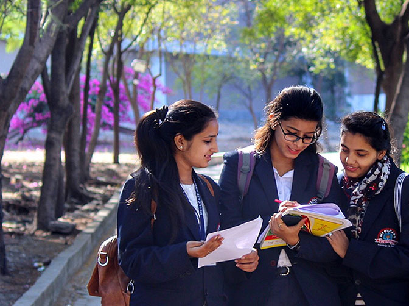

MISSION
Establish state-of-the-art facilities for world class education and research.
Conduct scholarly research and creative endeavours that impact quality of life.
Attract quality staff and students to cater for diverse needs and preferences and widen participation.
Build a foundation for students to be successful at all levels through high-quality, innovative programs.
Collaborate with institute, industry, and society to address current issues through research and align curriculum.
Involve in societal outreach programs to identify concerns and provide sustainable ethical solutions.
Encourage life-long learning and team-based problem solving through an enabling environment.